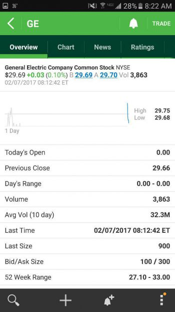
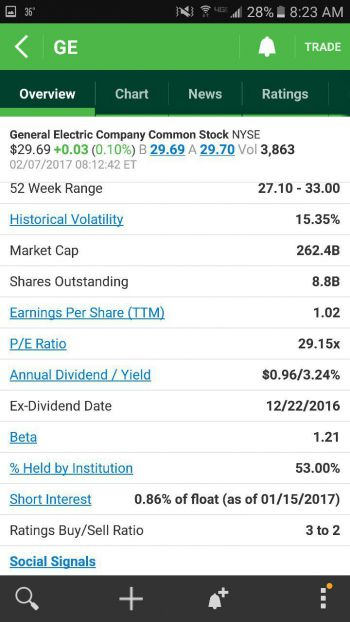
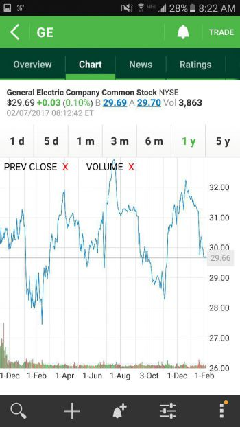
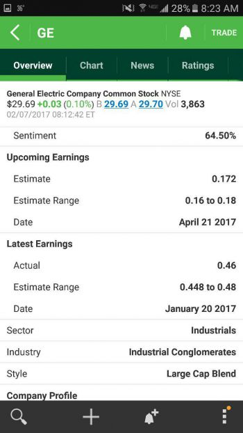

Before jumping into discussion, I want to first make a few statements. First off, while this is meant to be a basic introduction to trading, it assumes you at least know what a stock is. Second, while the stock market can be used as a means to grow your wealth, it does not guarantee growth. There are many people whom have lost their life savings in the stock market so it is very important that you fully understand the reality of that second point.
There are 3 general types of stocks. There are common stocks, preferred stocks, and indexes. Common stocks account for the majority of issued stock and is what you will most likely be recieving when you buy shares in a company. Preferred stocks you'll most likely never deal with. While they do trade on the exchanges, the ticker symbol is usually followed by '.P-' such as '.PR', 'PF', or sometimes just '.P'. For instance, Amazon's ticker is 'AMZN', Netflix is 'NFLX', and Facebook is 'FB'. So if there are preferred stocks of each then they would be 'AMZN.P', 'NFLX.P', and 'FB.P' respectively. Suffixes are used to signify a differential in the stock such as a specific division of a company or that the shares are of a foreign company.
There are 3 main exchanges you will encounter when trading stocks. They are the New York Stock Exchange(NYSE), Nasdaq, and Over-the Counter(OTC). Out of the three, NYSE is the most credible since higher standards are held. In order to remain on the NYSE, a companies stock must maintain above $4 per share and have a market cap(share price x number of shares) greater than $40 million. Nasdaq also has a $4 per share requirement, but has no market cap minimum. If a company does not meet either of these standards, they are delisted to the OTC exchange. The market that a particular stock is listed under is usually displayed next to it's name. The image below shows the details for General Electric(GE) using the TD Ameritrade App. Here, at the top next to 'General Electric Company Common Stock', you can see the company is listed under NYSE.

OTC stocks are considered much riskier for various reasons. The main reason is that many of the companies under OTC were originally listed under Nasdaq and then fell off to OTC, which means the company isn't in the best of shape. Many OTC companies end up fizzling out and going bankrupt leaving you with nothing. The other big reason why OTC stocks are riskier is that their low cost per share, market caps, and trading volume leaves them susceptible to pump-and-dumps. Since the price and market cap is so low, it's easy to buy huge volumes of shares for cheap. This will then drive the share price up artificially, making it look like a good opportunity, which causes more buyers to hop on board driving the price up even more. Then, when the originaly buyer dumps their shares, the prices plummet. It's very hard to get out when this happens because the trading volume in OTC is much lower and while everyone is trying to sell there is nobody to buy. However, OTC is where you will find many small companies that have no been delisted form Nasdaq. This could provide a great opportunity to purchase lots of shares for cheap in a growing company. This is what makes the OTC market so tempting to many. There opportunity increases along with the risk.
Dividends are payments made on a quaterly basis to share holders. The dividend rates range from 0%(non offered) to the high teens. Most companies that offer dividends payout 1-4% though. This percentage is an annualized rate. For instance, if you own 1 share worth $100 in a company that has a 2% dividend, then you will be paid out 0.5% each quarter. The payout percentage is completely at the companies discretion, independent of the companies performance, and can change without notice. Many see a dividend as a type of insurance against the future stock price.
A stock dividend is something tangible — it’s not an earnings projection; it’s something solid, in hand. A stock dividend is a true return on the investment. Everything else is hope and speculation.
- Richard Russell
In the first image below, we can see some more details on GE. Here the dividend is listed as 'Annual Dividend/Yield" and shows a value of $0.96(3.24% of a share). In order to recieve this dividend, you must be the owner of the stock by the ex-dividend date. The ex-dividend date is the cutoff to determine who will recieve the dividend. For GE, the ex-dividend date for the 4th quarter is 12/22/2016. This date changes per quarter. For the 1st quarter of 2017, the ex-dividend date is 2/14/2017. If you were to sell your shares between the ex-dividend date and the payout date, you would still receive the dividend even though you no longer own the stock. However, you will incur a higher tax rate on these earnings due to this reason. Alternatively, if you were to buy a stock between the ex-dividend date and the dividend payout date, you will not receive a a dividend. For stocks that offer a dividend, you will often see prices rise before the ex-dividend date and then drop after the dividend rate because of this. This cyclical rise and fall can be seen in the second image below, although the quarterly reported earnings play a part in this as well.

There is a lot of information you can acquire from the stock details without needing to be a quant or market expert. All the following examples will use the TD Ameritrade App, but other broker platforms should list this information in a similar fashion. Let's continue using General Electric as an example. Below are screenshots of the details for their stock. Let's go through them and breakdown what these details are and what you can derive from them.

The price data is pretty straight forward. Up top on the first image you can find the current value of the stock, which is $29.69 per share. To the right you will see a few more numbers. The '+0.03' is the difference in current price and the price at the time the market opened. The '0.10%' is the percent difference in current price and the price at the time the market opened relative to the opening price. Then you have the bid and ask prices. The bid price is the best(highest) price people are trying to buy the stock for(price you sell at) while the ask price is the best(lowest) price people are trying to sell the stock for(price you buy at). In this image the bid is '29.69' and the ask is '29.70'. The difference between the bid and ask prices is called the spread.
Below here is a mini graph of the current trading day's prices. At the right the day's highest and lowest price per share are shown. This is shown again beneath as Day's Range. In this image you will not see the numbers matching up. This is because while the market is open it is still not open to the public so there is technically not a real day's range yet since the day has not officially started(bell rings at 9:30am M-F). The information above next to the graph are the high and lows from pre-market fluctuations in price.
Below this min graph you also have the the days opening price listed as 'Today's Open' and the price at the previous trading day's close listed as "Previous Close'. At the bottom of this image there is also '52 Weeks Range', which as it sounds tells you the highest and lowest prices that the stock has closed at in the the previous 52 weeks.
The item listed as 'Volume' tells you the number of trades there have been on this stock since the day's open. The 'Ave Vol(10 day)' is the simply the average number of transactions for the past 10 trading days. This is useful to see the amount of action on a given day. If it's above the average and it's still early in the day then the stock is hot. If it's lower than the average then it's a slow day and shouldn't expect much movage.
Below volume, there is 'Last Time', Last Size', and 'Bid/Ask Size'. These can tell you a good amount about which direction a share's price will move and how fast. 'Last Time' is when the last transaction was made and 'Last Size' is the size of that last transaction. 'Bid/Ask Size' are the number of orders that can be filled for the bid and ask price.
So how do you use this info to get an idea of which direction the price may go? Let's use the numbers in the image as an example. The last transaction size was 900, the current bid size is 100 at $29.69, and the current ask size is 300 at $29.70. Since the bid size is smaller, the assumption is that all the bids for $29.69 will be met before the ask calls at $29.70. When all the bids at the current bid price is met, the bid price will be updated with the next best bid price and the size of calls for this price. For bids, the next best price is lower. This means that once the 100 bids at $29.69 are met, the next bid price may move down or stay the same if more bids are placed at that price since the 100 bids were met. If the bid price goes down then the absolute share price may follow if the spread is large enough. Alternatively if the ask size was smaller then chances are that the absolute stock price may move up if the spread is large enough. Now since the last size was 900 and the current bid size is 100 then the you can see that all the bids at this price can be met in one transaction if you use the last size as a suggestion. You can also look at stocks volume live feed and see how fast it's moving.
Intro
sub categories - day trading, swing trading(go off news/hype/sentiment), cyclical trading, long term(growing industries/indexes)Moving on. Now it's time for the
A technical based sou
To help Get notified when the article is posted by signing up here.
Never test the depth of the river with both feet.
- Warren Buffet
Buy at the point of maximum pessimism; sell at the point of maximum optimism.
- Sir John Templeton
Only buy something that you’d be perfectly happy to hold if the market shut down for 10 years.
- Warren Buffet